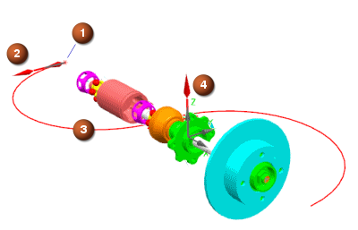

“曲线轨迹”方法可创建关键帧在模型中沿现有曲线排列的轨迹。可以将工作部件中的任何曲线用作曲线轨迹轮廓(包括实体边界)，只要这些曲线轮廓是连续的。
NX 对曲线轨迹上指定的关键帧点之间的位置进行插补，并为动画生成中间帧。
选择轨迹轮廓的曲线或边后，指定了轨迹初始基本摄像机设置的 Frame0 被自动添加到轨迹轮廓的开始处。
|
注释 |
除非重新定义曲线轨迹，否则不能删除或移动 Frame0。 您可以使用编辑关键帧对话框中的设置摄像机选项来更改 Frame0 的设置。 |
|
 |
|
曲线轨迹帧插值已通过以下参数定义：
眼点通过在曲线轮廓上关键帧点的坐标来定义
曲线轨迹中的关键帧点可沿轨迹路径控制摄像机方位以及控制动画在回放的不同阶段的速度。
方位选项指定的查看点可以与关键帧点或图形窗口中的对象相切
视图向上矢量
对于 1D 和 3D 轨迹，在创建曲线轨迹轮廓时，视图向上矢量由 Y 轴定义。
对于 2D 轨迹，视图向上矢量由与轨迹曲线平面垂直的矢量定义。